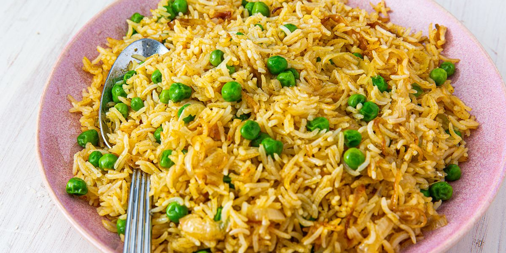

Pilau Rice

Description
This is a tasty Indian side dish
made easily and quickly in the
Instant Pot®.
Prep: 10 mins
Cook: 20 mins
Additional: 10 mins
Total: 40 mins
Servings: 6
Yield: 3 cups
Ingredients
- 1 tablespoon vegetable oil
- ½ teaspoon cumin seeds
- ¼ cup diced red onion
- ¾ tablespoon garam masala
- ½ teaspoon ground turmeric
- ½ teaspoon salt
- 1 ½ cups vegetable broth
- 1 cup uncooked basmati rice, rinsed and drained
- ½ cup frozen peas and carrots
- 1 bay leaf
Steps
- Turn on a multi-functional pressure cooker (such as Instant Pot®) and select Saute function.
- Heat oil in the pot.
- Add cumin seeds and stir until they just start to pop.
- Stir in onion and cook until they begin to soften, about 2 minutes.
- Season with garam masala, turmeric, and salt.
- Add vegetable broth, rice, frozen peas and carrots, and bay leaf; stir until well combined.
- Close and lock the lid.
- Select high pressure according to manufacturer's instructions; set timer for 5 minutes.
- Allow 10 to 15 minutes for pressure to build.
- Release pressure using the natural-release method according to manufacturer's instructions, 10 to 40 minutes.
- Manually release any remaining pressure.
- Unlock and remove the lid.
- Remove bay leaf.
- Taste rice and adjust seasoning if necessary before serving.